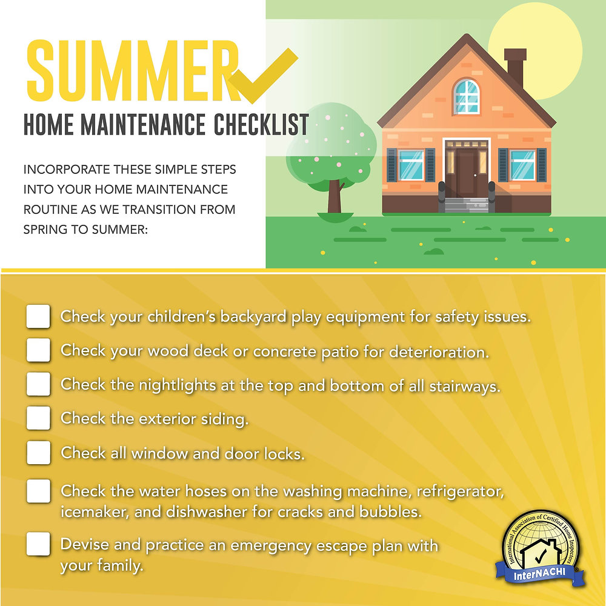
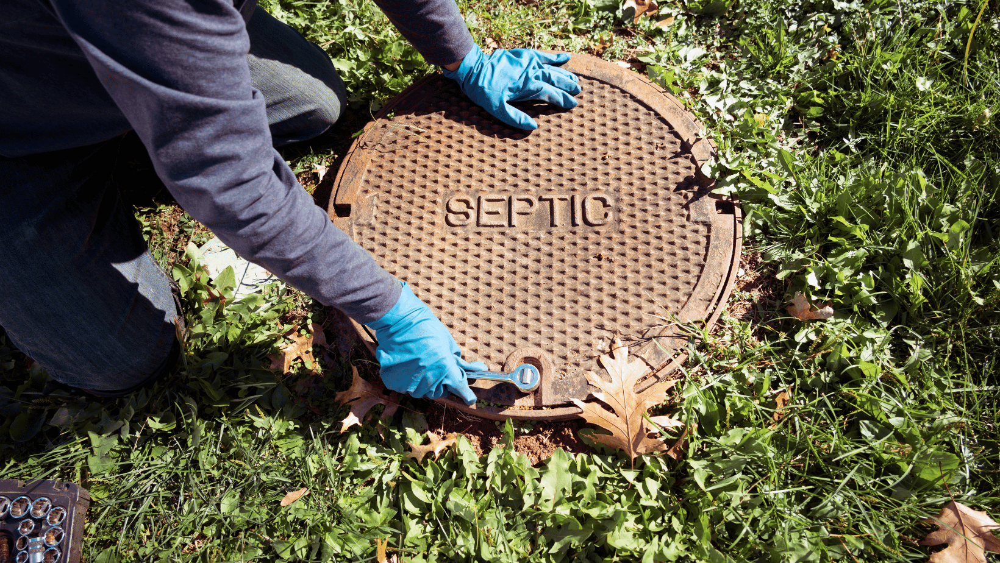

Learn how to perform DIY inspections and understand what professionals look for. Keep your system running smoothly with regular checkups.
Understand the differences between what you can check yourself and when to call in the experts.


Complete this simple checklist every month to catch potential problems early.
Check for standing water in yard
Look for puddles or soggy areas near the drain field
Monitor all drain speeds
Sinks, tubs, and toilets should drain quickly
Sniff for sewage odors
Check indoors and outdoors for any unusual smells
Look for unusually green grass
Extra-green patches may indicate drain field issues
Listen for gurgling sounds
Gurgling from drains or toilets can signal problems
Check toilet flush performance
Toilets should flush completely without hesitation
Understanding the professional inspection process helps you know what to expect.
Structural integrity and sludge levels
Inlet and outlet baffles
Soil absorption and biomat assessment
Level and outlet condition
Connections, venting, and backups
A professional inspection report should include these key sections.
Sample Documentation
Follow this timeline based on your system's age and condition.
New septic systems should be inspected annually for the first two years to ensure proper settling and function.
Systems in good working order typically need professional inspection every 3 years, along with pumping as needed.
Aging systems require more frequent monitoring. Components may begin to deteriorate and need attention.
Always get a professional septic inspection before purchasing a home with a septic system. This protects your investment.